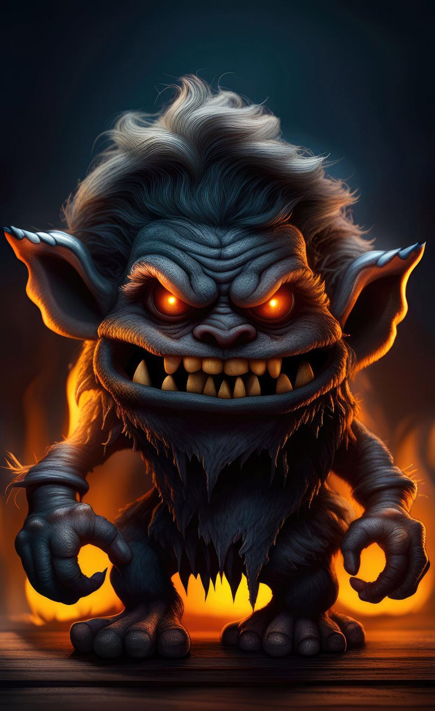
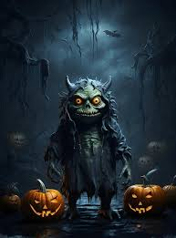
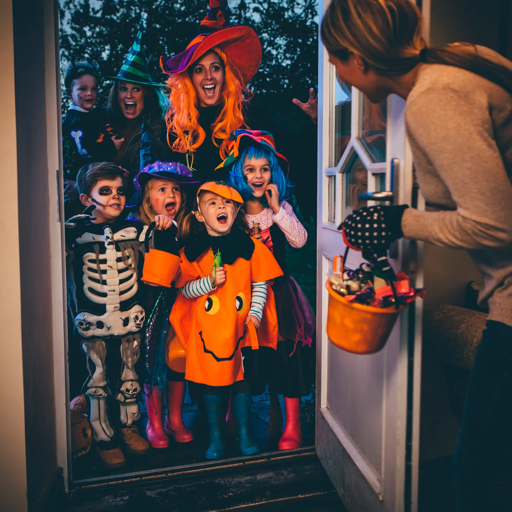

Halloween began with the ancient Celtic festival of Samhain over 2,000 years ago, celebrated in regions of Ireland, the UK, and France. For the Celts, Samhain marked the end of the harvest and the beginning of winter—a time when they believed the boundary between the living and the dead blurred. They thought spirits returned to earth on October 31, bringing both mischief and a chance for connection. To ward off or confuse these spirits, people wore costumes made from animal skins and lit large bonfires.
As Christianity spread, the holiday was adapted by the Church. Pope Gregory III declared November 1 as All Saints’ Day, with October 31 becoming All Hallows’ Eve, later known as Halloween. When Irish and Scottish immigrants brought Halloween customs to America in the 19th century, it evolved into a festive celebration of costumes, pumpkin carving, and trick-or-treating. Today, Halloween combines ancient traditions with modern fun, celebrating all things spooky.
On a foggy October night, a group of friends gathered around a fire deep in the woods, eager to tell ghost stories. As the flames crackled, Mia, known for her eerie tales, began her story about “The Shadow Man.”
Years ago, in a nearby village, there was a mysterious figure who only appeared in the dead of night. They called him the Shadow Man because he seemed to melt into the darkness, his form barely visible except for two hollow eyes that glowed faintly. People would hear strange whispers, see shadows flicker, and feel an icy chill whenever he was near.
One night, a young boy dared to follow him. He crept through the dark, watching the Shadow Man glide silently toward the old churchyard. The boy saw him stop at an unmarked grave, where he knelt, whispering something too faint to hear. The boy's curiosity got the best of him as he leaned in closer—and suddenly, the Shadow Man’s eyes snapped open, staring right into his.
Mia paused, glancing around. “Some say the boy disappeared that night. Others claim they can still hear his whispers through the trees, warning anyone who dares to follow.” As the story ended, the forest seemed eerily quiet, and the friends huddled closer, feeling the chill of the unknown.

Halloween celebration

Halloween, celebrated on October 31, is a holiday filled with spooky fun, costumes, and festive traditions. Originating from the ancient Celtic festival of Samhain, Halloween marked the end of the harvest season and the beginning of winter, a time when people believed the boundary between the living and the dead blurred. Over time, this festival evolved, influenced by Christian traditions, to become a night dedicated to remembering the departed.
Today, Halloween is celebrated in many countries with activities like trick-or-treating, where children dress up in costumes and go door-to-door collecting candy. Haunted houses, pumpkin carving, and costume parties are also popular, with people dressing up as anything from ghosts and witches to pop culture characters. The iconic symbol of Halloween, the carved pumpkin or "jack-o'-lantern," is believed to ward off evil spirits.
Communities decorate their homes with eerie decorations, such as cobwebs, skeletons, and bats, to create a spooky atmosphere. Halloween is also a time for scary movies, ghost stories, and bonfires, all of which add to the thrill and excitement. For both children and adults, Halloween is a playful celebration that embraces the mysterious, allowing everyone to indulge in a night of creativity, fear, and fun.